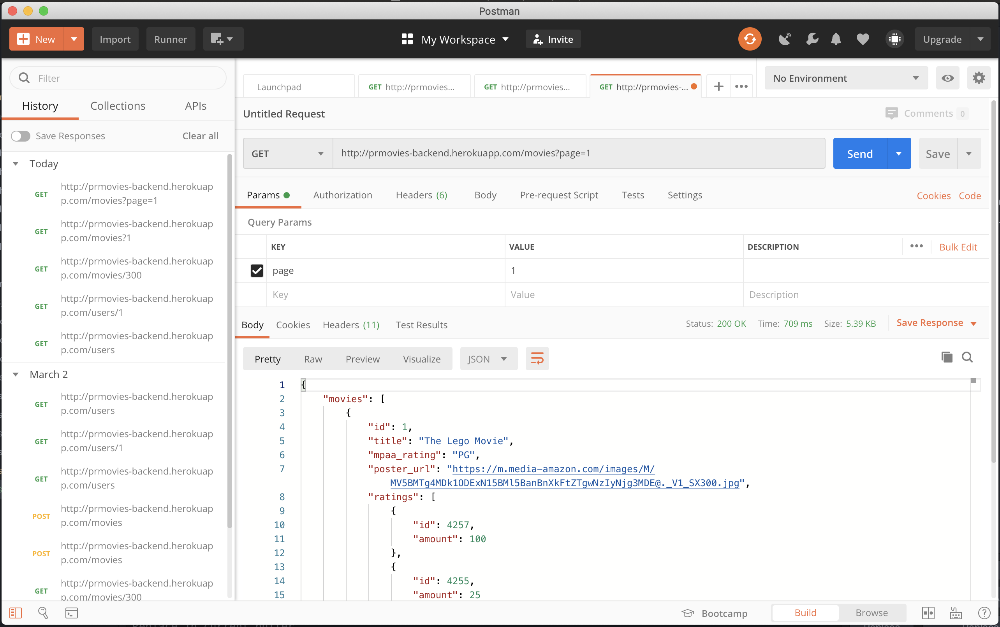

API
Application Programming Interface
An API is the way that we can interact with the information on our server or backend. The API is responsible for handling the https requests that we make, and will return some information in JSON format (most likely). The ultimate goal of an API is to help spit responsibilites and make it easier to make changes on the server. It relies heavily on RESTful programming.
REST
Representative State Transfrer is an architectural style that revolves around the usage of HTTP requests to transfer information between client and server when using web based applications. Javascript processes this information through fetch requests.
- A GET request will retrieve information from the backend, and the frontend will display this information however we need it. The example would be when you are looking at a the comments on a youtube video. A GET request is made once you scroll to the bottom of the page and it checks if another set of comments can be retrieved.
- A POST request occurs most often when you want send information to the backend to create something new. An example would be when you are registering for an account on a website. When you hit that register button you are sending a post request with the information you put into the text fields in the body of the request. The API send this information to the backend and you are added to the database. A response is sent back confirming this action along with the newly created user information.
- A PATCH/PUT request is used to update data on the backend. If you try to change your username or password you will be sending one of these requests with the new information.
- A DELETE request does exactly what it sounds like and will remove whatever information is requested from the backend. If you want to delete your post it will remove the post and any information associated with it.
// GET Request
fetch(LIBRARY_ITEMS_URL)
.then(response => response.json())
.then(json => displayItems(json))
// POST Request
const bodyObj = {
number: number,
library_item_attributes: commonItems
}
const reqObj = {
method: "POST",
headers: {
'Content-Type': 'application/json',
},
body: JSON.stringify(bodyObj)
}
fetch(JOURNALS_URL, reqObj)
.then(response => response.json())
.then((json) => {
displayItem(json, json.libraryable);
})
// PATCH Request
const id = `/${item.dataset.libraryId}`;
let editURL = MAGAZINES_URL + id;
const bodyObj = {
type_of_mag: type,
date_of_pub: dateOfPub,
library_item_attributes: commonItems
}
const reqObj = {
method: "PATCH",
headers: {
'Content-Type': 'application/json',
},
body: JSON.stringify(bodyObj)
}
fetch(editURL, reqObj)
.then(response => response.json())
.then((json) => {
displayItem(json, json.libraryable);
})
//DELETE Request
const id = `/${item.dataset.libraryId}`;
let deleteURL;
const reqObj ={
method: "DELETE"
}
if (item.dataset.libraryType == "Book") {
deleteURL = BOOKS_URL + id;
}else if (item.dataset.libraryType == "Journal") {
deleteURL = JOURNALS_URL + id;
}else if (item.dataset.libraryType == "Magazine") {
deleteURL = MAGAZINES_URL + id;
}else if (item.dataset.libraryType == "ConferenceProceeding") {
deleteURL = CONFERENCE_PROCEEDINGS_URL + id;
}
fetch(deleteURL, reqObj)
.then(response => response.json())
.then(json => {
removeItemLocally(item)
// console.log(currentLoggedInUser);
})
Postman
This application is used to test the data that an API will send back once one of these requests are made. It allows for you to better understand the API that you are working with, and it can make it easier for you to plan how to utilize this information. You specify the the type of request you want to make, enter the url, add any information(params, authorizations, or body values) that you want to send, and view the results at the bottom.
